In the previous unit, we learned how to use deployment diagrams to reveal already some details about the structure of the system. This week, we start with the specification of how the system actually works. This will be more technical and on a more detailed level as before.
During this and the following weeks, you get several opportunities to design state machines. This is useful, since it allows you to handle concurrency in systems correctly, which is useful no matter which programming language or framework you will later use. Also, creating state machines is a task that trains your generic skills as an engineer, and many problems can be mapped to that of state machines.
Learning Goals
After this week, you will be able to:
Create syntactically correct state machines.
Interpret and explain detailed state machine behavior.
Recite the main features of state machines.
With these basic skills you have every concept of state machines covered we need for the course. However, learning to design good state machines will require some more experience, which you will acquire over the following weeks.
Hello, State Machines!
State machines are one of the fundamental diagrams to describe behavior. They are used to specify communication protocols, logic in embedded systems, and in general behavior where events need to be coordinated in a complex way. Here is an intuitive example of a sketch for a state machine that illustrates in a compact way how a traffic light works:
Another example is the specification of the TCP protocol, also using a state machine:
Why State Machines?
Have a look at the short interview section with Richard Stallman (starting at 0:25:25), about the construction of the operating system kernel for GNU:
When he says “It took us years to get the thing to work.”, you can imagine how frustrating it can be to handle concurrent behavior and not getting it under control. There are problems that look simple but that can quickly grow complex, and state machines offer a way to handle complexity in such situations.
A bit of a problem with state machines is that developers often only understand they should have used a state machine for a problem after it is too late, and they already spent much effort on trying to solve a task in other ways. We tend to underestimate the amount of concurrency and complexity that some situations contain.
With state machines, you can structure complex behavior such that:
It is easy to debug and understand precisely what happened.
Only one thing happens at a time.
You have detailed control over concurrency.
Understanding State Machines
Given the complexity they handle, state machines are relatively easy to understand as they only contain a handlful of concepts to model behavior. There is also more than one way to approach an understanding of state machines, and in this course you will get the chance to approach state machines from three angles:
State machines as a diagram (following below)
State machines as abstract machines that execute some behavior (later below)
State machines as implementation pattern in code (in another unit)
This week, we will introduce state machines by their diagrams and explain their meaning by describing an abstract machine. Later, we will introduce how you can implement state machines in Python. This gives you three different entry points into the concept of state machines.
Example: Traffic Light
Let’s assume we need to describe how a traffic light works. One idea is to just take pictures of a traffic light, like this:
That already helps; the photos describe the phases in which we can observe the traffic light. Whenever we look at the traffic light, it is in one of the phases described by the photos. For easier reference we have even given these photos some labels, intuitively red, red-yellow, green and yellow. (The red-yellow is common in many, but not all countries.)
The photos already help explaining the traffic light. But imagine you want to explain on paper in which sequence a traffic light switches its lights. One way is text, but a simpler way is to add arrows between the photos, like this:
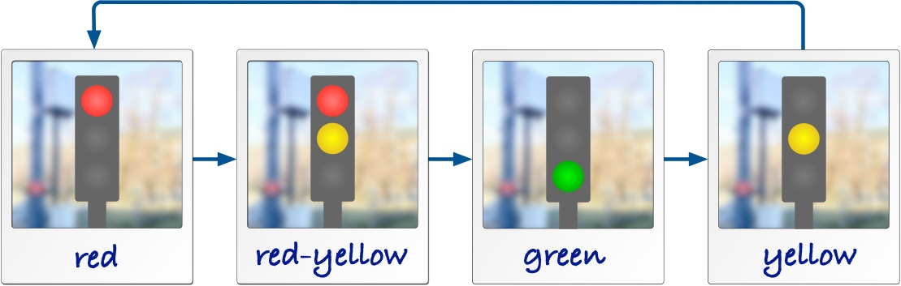
Of course, the picture above is a simplification. Some trafic lights are switched off at night and just blink yellow. The same happens as a default state in case there is an error in the controller. We can show this blinking with the two additional photos blink-off and blink-on. The two arrows between them show how the blinking is created by two phases, one with the yellow light on and one with all lights off. We also show that blinking can be started from any of the other phases, because an error can always happen, and the lights may be switched off at any time. When we get out of the blinking sequence, we go towards the phase red for safety.
That’s a complete and detailed description of a traffic light. As one last thing we add an arrow to mark in which phase a traffic light starts once it is switched on for the first time. For safety, we put it into red first.
The photos depict the traffic light in phases. Some of these phases are shorter than others, but all of them last for some time. In the traffic light, these phases have also in common that they correspond to lights being switched on or off. In state machine terminology, we call these phases states, and sometimes for clarification we say it is a control state, to distinguish the term from the more general English word state.
The arrows between the states are called transitions.
Maybe you see nothing special here yet, and you may think that this is really easy. One word of caution however: Beginners with state machines have often trouble to distinguish between states and transitions once they start creating their own machines. So, remember this simple example to understand the difference between them, as a guide for cases where the distinction between states and transitions is maybe less obvious.
State Machine Diagrams
For the traffic light above we described actually a state machine. Since taking photos of real objects is cumbersome, and we also want to describe abstract things we cannot take a photo off, we replace the photos above with a more convenient symbol, a rectangle with rounded corners. These are the states in which the traffic light can be. A state machine for the traffic light looks hence like this:
Have a look at the detailed elements in this diagram:
The frame has a five-cornered compartment at the top, showing the name of the state machine, prefixed with the keyword stm.
The states are shown as rounded rectangles. The state names are shown in bold text. As a naming convention, we only use lowercase letters, numbers, and underscores for state machine names, similar to rules for variable names in programming languages.
The start of the state machine is shown by a compact black dot. This is also a state, called the initial state. Once the state machine is activated, it leaves this initial state.
States
State symbols with the same name refer to the same state. This means, we can use a copy of the state symbol to make our layout easier, without changing what we actually mean by the diagram. For instance, we can remove the long arrow from state yellow to state red just by having another copy of the symbol for state red:
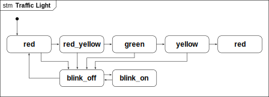
The diagram describes exactly the same behavior. Both state symbols for the state red refer to the same state, so our traffic light still has the same number of states, just its layout changed. In this simple state machine this doesn’t really matter, but this can help you to create better layouts once state machines become larger.
State Names: Selecting good names for states can help making state machine easier to understand, especially when the states map to phases of the thing we want to model, like on and off for a lamp, or open and close for a lock. However, sometimes there is no obvious good name. In such cases, I recommend to use state names like s0, s1,…, which can make life easier. You always have the possibility to attach a note to a state and explain what it means.
Pay attention to the state symbol. It’s a rectangle with some rounded corners, nothing else!
Transitions
The arrows between the states are called transitions. We have said above that the state machine is at any point in time in exactly one of its states. It is not in two or more of them at the same time, and it is never somewhere in between. Conceptually, this means that a state machine switches from one state to another within no time at all, meaning that transitions take no time. This sounds magical, but we will come back to this.
So far, we have not yet talked about when a transition happens, this means, what triggers a transition. We have, for example, not described when the traffic light switches from red to red_yellow. There are three types of events that can trigger transitions in a state machine:
The state machine is started, then its transition from the initial state is triggered. This happens when the component or code surrounding the machine is started and then starts up the machine, for instance when we boot our firmware and the software starts running.
The state machine observes the expiration of a timer. Timers are managed by the machine itself, and we will learn how timers can be started and stopped later.
The state machine receives a message. State machines can receive messages from other parts of the system, which can be code, drivers, interrupts or communication modules, or other state machines.
A transition must have exactly one trigger. Without one, it would never be started at all. For simplicity, we also don’t allow more than one trigger. A trigger is declared using a label on the arrow, followed by a /. This means that you should have a trigger label at all transitions, with the only exception being transitions starting at initial states, because their trigger is implicitly the start of the entire machine.
Actions
Let’s have a look at a blinking light that you find often at the entry of tunnels. The light blinks with two lamps to indicate that the tunnel is closed. The blinking happens so that either the left lamp or the right lamp are on, and they switch every second.
From our experience with the more complex traffic light, this should be an easy state machine to write down. It has two states, leftand right, corresponding to one of the lamps being switched on. We also added labels to some of the transitions. They describe that the state machine switches from state left to state right triggered by an event t1. This is a timer. It switches back with a timer t2. The detailed timer operations are not yet visible, we come later to that. In this blinking light we also show how to switch it off. This happens by an event called off, and it can happen in any of the two states.
We also want to specify the actions to switch the individual lamps on and off. We assume that we have for this the actions left_on(), left_off(), and right_on(), right_off(). We already use Python syntax for these actions. In our state machine diagram we can use these actions and add them to the transitions.
The actions are also called an effect of the transition, and happen at the same instant the transition is executed, that means, when we switch states. The effects are written behind the / of the transition label.
The state machine runs action left_on() when it starts, as declared by the initial transition.
When the machine switches from state left to right, it runs actions left_off() and right_on(), separated with a ;.
When the machine switches from state right to left, it runs actions right_off() and left_on(), separated with a ;.
When the blinking light switches off and moves into the final state, we run actions left_off() or right_off(), depending on in which of the two states we are.
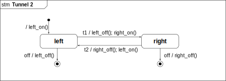
Another way to execute actions is to add them to a state, and run them when we enter or exit the state. For some problems, such as the blinking light, this makes the diagram much nicer. Have a look at the functionally equivalent diagram:
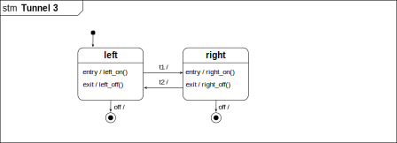
Here we have drawn the state symbol with a compartment and add entry and exit actions to it. Actions that are preceded with the prefix entry/ are executed when the state machine enters the state, and actions preceded with the prefix exit/ run when the machine exits the state. In the example this cleans up the entire diagram, since we also can remove the actions from the initial transition and the transitions that target the final states. When we before had to add actions to all transitions entering or exiting a state, it is now enough to only declare them once within the state.
You can list as many entry and exit actions for a state as you need, just add a new line with the prefix entry/ or exit/ for each of them. And of course, it looks nice when you list all entry actions above the exit actions. We also assume that they are executed in the way they are sorted, that means when we enter a state then the entry actions are executed in the order they are written, and the same for the exit actions when we exit the state.
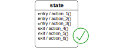
Mind the Slash! The slash on the transition labels separates the triggers from the actions.
For initial transitions (the ones originating at an initial state) that do not have an action, the label is empty.
For initial transitions with actions, we add the slash before the actions: /a1(); a2()
For actions that do not start at the initial state, they need to declare exactly one trigger, followed by the slash. Optionally, they can declare actions as they need. For instance t1/ or t1/a1(); a2().
Timers
The expiration of a timer can trigger a transition. By convention, we name timers with a prefix t, like for example t0. To declare that a transition is triggered by a timer, we simply write the name of the timer in the beginning of the transition label.
State machines manage timers on their own, wich also means that timers can only be started as part of an action within the same state machine. As we anticipate already our implementation in Python, we use the following syntax for controlling timers:
start(t1, 1000) starts a timer with name t1 that will expire after 1000 milliseconds. If we invoke this action again while the timer is active and has not yet expired yet, the countdown will again start from the beginning, i.e., we expect the timeout 1000 milliseconds from the last call of start(t1, 1000).
stop(t1) stops a timer, so that a timeout will not happen in the future. In case this action is called but t1 already expired or was never started before, nothing happens.
Spaghetti Timer Example
Imagine we want to describe the behavior of a simple spaghetti timer. This timer expires after 10 minutes and then beeps for 3 seconds. We can do this with the state machine below.
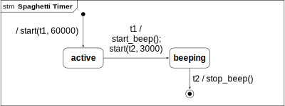
Using entry and exit action on the states, we can also write this one in a more compact form.
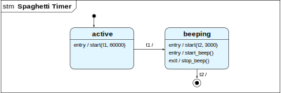
Exercise: Simulate both of these state machines in you head or on paper by going through all the states, starting with the initial state. Verify that these two versions really are functionally equivalent.
Internal Transitions
You have seen that we can declare entry and exit actions within a state symbol, which lets us in some cases describe more compact state machines. Another thing we can declare within a state is an internal transition. The internal transition has a label like normal transitions, trigger/actions but is written inside the state symbol, between the entry and exit actions.
The state s1 above declares an internal transition A/a_2(). It is triggered when the event A is happening. When that happens, action a_2() is executed. Because it is an internal transition, the entry and exit actions are not executed. Also, because the state stays the same, we can react many times to the event A. Whenever it occurs and we are in state s1, action a_2() will be executed.
Note: When you look at the entry and exit actions, you see that they almost look the same as an internal transition. And the notation is quite consistent, because the prefix entry and exit before the / really do describe when the action behind the slash is executed. But these are not transitions, just declarations of entry and exit actions.
Choice States
In some cases, we want to have a choice in which state a transition should switch, based on conditions in data. As an example, let’s look at the incomplete state machine below. It describes a part of a controller for a heater. In state heater_on we wait for 1 second for timer t, which triggers the transition towards the choice state. This choice state has two alternative branches, distinguished by two guards, in rectangular brackets. Think of them as an if-statement in a programming language. if the temperature is okay, we switch into state heater_off. If not, we take the else-branch and restart the timer, to check again in another 1000 milliseconds.
Don’t worry too much about what to write into the guard for now. This will get much clearer once we implement state machines in Python, where we implement the entire choice state with a Python if-statement.
A choice state can have many outgoing branches. One of them must have a guard that is true, otherwise the state machine would be blocked. I therefore recommend to have an else-branch, which is true whenever none of the other branches is true.
By the way: There is one imperfection with this machine: When the temperature is not okay yet, we re-enter the state heater_on, which means that we execute entry action heat_on() again. We assume here that it is programmed in such a way that this doesn’t matter. An alternative is to add the action to both incoming transitions of state heater_on.
Transitions, Revisited
Now you have seen many kinds of transitions, and we can summarize all the different terms for them. Knowing these terms makes talking about state machines much easier when you design one together with other engineers. So we have the following transitions:
An initial transition originates at an initial state. It does not declare a trigger, since it is executed immediately when the state machine starts.
A self-transition is simply a transition that starts and ends in the same state.
An internal transition is a transition that starts and ends in the same state, but which does not invoke any of the state’s entry and exit actions.
An external transition is the type of transition that is not an internal transition. That means, a “normal” transition form one state to another, a self-transition, or an initial transition.
Transition Labels
We have seen now all the types of elements that we can add into the label of a transition. This summarizes information from above, and you can read it as a repetition:
Guards: Transitions originating in a choice state must have them.
Triggers: All transitions originating in a normal state must declare a trigger, which is either the reception of a message or the expiration of a timer. Pseudostates like initial states or choice states are transient, and the outgoing transitions therefore do not declare a trigger.
Effects: Any transition can declare any number of action that it executes. Several actions are separated by a semicolon.
Slash (/): The slash separates triggers from actions. When a transition has either of them, we write the slash.
States, Revisited
Let’s also have a look at all the different states we have seen until now, and repeat some properties:
Initial states and choice states are called pseudo states, because they are not really states in the sense that we wait in them. They are transient states, meaning that the state machine is only going through them, but never waits in them. For that reason, transition originating at initial or choice states do not declare a trigger.
At any time, a state machine is in exactly one of its states. We assume that transitions execute in no time, so we never find a state machine like “waiting” within a transition. Waiting only happens within states.
State symbols with the same name refer to the same state.
State symbols are a compact rounded rectangle, and optionally contain a compartment where we can declare entry actions, exit actions and internal transitions.
Sending Messages
State machines can send and receive messages. You may think that this is useful for implementing communication, like via TCP/IP or other protocols. But the motivation is actually different. By sending messages, we can couple state machines with each other, and handle certain complex behavior easier. We can for example solve a problem with two state machines that execute parallel to each other, and just synchronize with each other every now and then via passing messages between each other.
To send a message, we use the action send('A', 'stm1'), where the first argument is the name of the message, and the second the name of the state machine we want to send the message to.
Messages are received simply by declaring them as triggers.
Example: We want to extend our spaghetti timer from above. The new timer should blink a light while it is active. Have a look at the two coupled state machines below. The one at the top has the control of the 10 minute timer, and waits until a user activates it via message start. This message can come from a user interface, which we don’t show here. Once this message arrives, the machine switches into state active, which declares the entry actions that start the 10 minute countdown timer t1, and another entry action that sends message on to the machine to the right. This machine takes only care of the blinking light, 1 sec on and 1 sec off.
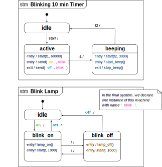
We could build a single state machine for it, which handles the 10 minutes timeout and the 1 sec blinking at the same time. But imagine that the timer has more complicated functions, like restarting, pausing, or it would be an entire different application with more functions to integrate. Then it helps to reduce complexity when you can start and stop a sub-function such as blinking a light just by sending messages to it from another machine.
Traces
Once you get more experienced with state machines, you will be able to simulate them in your head, just by figuring out the sequences in which the different events may happen. Since at any time more than one event could happen, the same state machine could create many different sequences of events, also called traces. When you will design state machines, it means to get control over all of these traces, so that in the end, any possible behavior (that means, any possible trace of events) is okay for the system. State machines hence describe complete behavior. (We will later see how another diagram type, interactions, describe usually only partial behavior.) For state machines, this means that what they don’t describe, they can’t do.
By looking at a state machine, we can write down possible sequences of events. Lets just write down one trace of events that can happen when we activate the spaghetti timer. We just write down the events regarding the main machine Blinking 10 min Timer, and do so by listing the sequence of all triggers and actions as they happen:
initial transition
message start received
entry action start(t1, 1000) in state active
entry action send(on, blink) in state active
timer t1 expires
exit action send(off, blink) in state active
entry action start(t2, 3000) in state beeping
entry action start_beep() in state beeping
timer t2 expires
exit action stop_beep() in state beeping
Here there is actually only a single behavior, because we go through the states based on the timeouts of the two timers t1 and t2. A more realistic timers would also describe behavior where we could abort it, which would be another trace.
Exercise: Put your finger on the state machine Blinking 10 min Timer and follow through the trace above. Note that the event that timer t1 expiration happens before the exit action send(off, blink) in state active happens. This is because the timer expiration of t1causes this transition and action. (Some students find that not intuitive, since the timer t1 is graphically outside of the state, and somehow looks graphically to happen “later” in time.)
State-Transition Tables
So far, we used diagrams to write down our state machine. Instead we can also use a table that lists all the transitions. This will be the basis for implementing state machines in Python. There’s not much more to say about this table, other than that it offers another way of looking at a state machine, and understand them systematically. Below you see again the state machine for the tunnel light, and the table that describes the same behavior. Check if you understand what each row means, and how it corresponds line by line to the diagram.
Source State
Trigger
Actions
Target State
initial
-
left_on()
left
left
t1
left_off(); right_on()
right
left
off
left_off()
final
right
t2
right_off(); left_on()
left
right
off
right_off()
final
A Physical State Machine Model
We promised you another way to get an intuitive understanding of state machines. To understand how a state machine works, you can also think of them as a physical machine, which executes almost like a mechanical clockwork. The figure below illustrates such a machine.
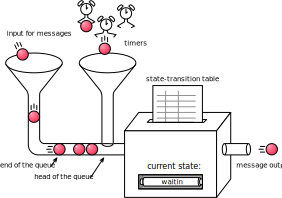
The state machine has an input queue for messages sent by other parts of the system. These may be other state machines within the same computing node, state machines from other nodes, or other parts of programs that send messages.
All messages arrive and are sorted in a first-in, first-out order, also called FIFO.
The state machine also manages a set of timers. The state machine starts these timers as part of its behaviour. When a timer expires, it places an event in the same event queue as the one for incoming messages. Timer expiration events are placed at the front of the queue, since an event from a timer should be processed as close to its actual expiration time as possible.
The state machine interprets the state machine diagram. The diagram can be represented as a state-transition table, as we have seen above. This table encodes in which current state of the state machine an event has which effect. The effect means the behaviour the state machine is executing. This includes to start and stop timers, run operations, and moving the state machine into its next state. The state machine can also keep track of other data by using variables. This is why this type of state machine is also called extended finite state machine.
Some Finer Details of Event Handling
In the following, we want to consider more detailed cases of event handling. If you have understood everything above, then these should be okay to understand too. If you feel that the basic state machines are still a but unfamiliar and you need to get used to, then don’t worry too much about the details below. We will come back to them at a later point too.
Discarding Events
As described above, when an event arrives in the input queue, it is consumed by the state machine by executing whatever transition is triggered by that event from the current state. But what if the current state does not say anything about the incoming event?
When the state machine is in a state that does not declare a transition that is triggered by the event at the head of the queue, the event is taken from the queue and discarded, that means thrown away.
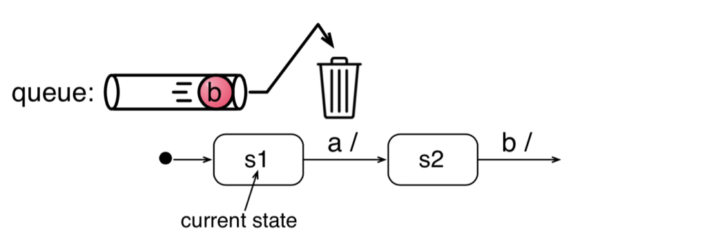
Look at the situation above. Assume that the state machine is currently in state s1. When message b arrives, it is not consumed, since state s1 only has a transition with a trigger a, so the state machine only waits for a. Message b is therefore discarded as soon as it arrives during state s1. Note that it is discarded even if it is consumed by the later state s2, which is not the current state.
Deferring Events
What if you design a state machine, and know that an event (B) can arrive at any time, but you can only handle it after you have received another event A. For this case, you can defer an event in some states.
A state can defer an event by naming it inside the state body like a transition, but following the keyword /defer. When a deferred event is at the head of the event queue, the state machine will act like it is not there, and process the first event that is not deferred. Once the state machine switches into its next state, the previously deferred event is not ignored anymore (unless also the next state defers it).
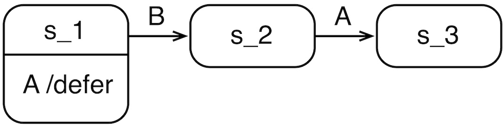
Summary of Queue Semantics
Many of the semantics we have learned now are about how the input queue of the machine is handled. We can summarize them with the following points:
Messages arriving at the input of the state machine are placed at the end of the queue.
Time events are placed at the front of the queue when the corresponding timer expires, so that timers can be handled as close to their actual expiration as possible.
States can defer events, in which case they are only regarded when the state machine switches into a new state.
Events that are not consumed or deferred are simply discarded, that means thrown away.
These were most of the thing you will need to know about state machines, and you are good to go for the test. For your next team activity, you will create state machines. You can already now read about some tips to create state machines. Read on if you have some energy left.